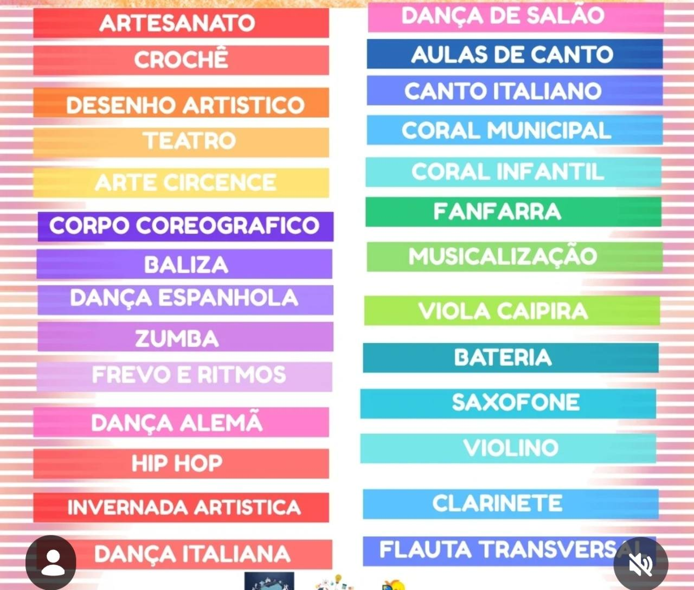

CULTURA VIVA, CIDADE PRESENTE
Seu talento.
Nossas raízes.
Infinitas possibilidades.
Um lugar para descobrir, criar e pertencer. A arte acontece em Palotina — e tem espaço para você.
✳ Música, dança, artes e muito mais.
FEITO DE GENTE. FEITO DE ARTE. ✳
✳
A cultura é de todos.E também é sua.
✦01 / NOSSA ESSÊNCIA
A cultura transforma.
A gente faz junto.
O Departamento de Cultura de Palotina é um ponto de encontro para a criatividade, a expressão e as tradições da nossa cidade.
Aqui, diferentes linguagens artísticas se encontram. Das primeiras notas musicais aos passos de dança, cada descoberta é uma nova forma de participar da vida cultural de Palotina.
Acompanhe no Instagram ↗02 / DESCUBRA SEU PRÓXIMO TALENTO
Uma cidade.
Muitas formas de criar.
Explore as oficinas do Departamento de Cultura. Para saber sobre turmas, horários e vagas, fale com nossa equipe.
| OFICINA | ÁREA | SAIBA MAIS |
|---|
Nenhuma oficina encontrada. Tente outro nome ou categoria.
Ver o quadro original das oficinas ＋

UM NOVO CAPÍTULO COMEÇA AQUI
Um mundo inteiro.
A uma página de distância.
A cultura também vive nos livros. Visite o site da Biblioteca Municipal de Palotina e continue essa descoberta.
Acessar a biblioteca ↗03 / VAMOS NOS ENCONTRAR
A porta está aberta
para a sua criatividade.
↗
◷
Horário de atendimento
7h30 às 11h30 · 13h30 às 17h30
☏